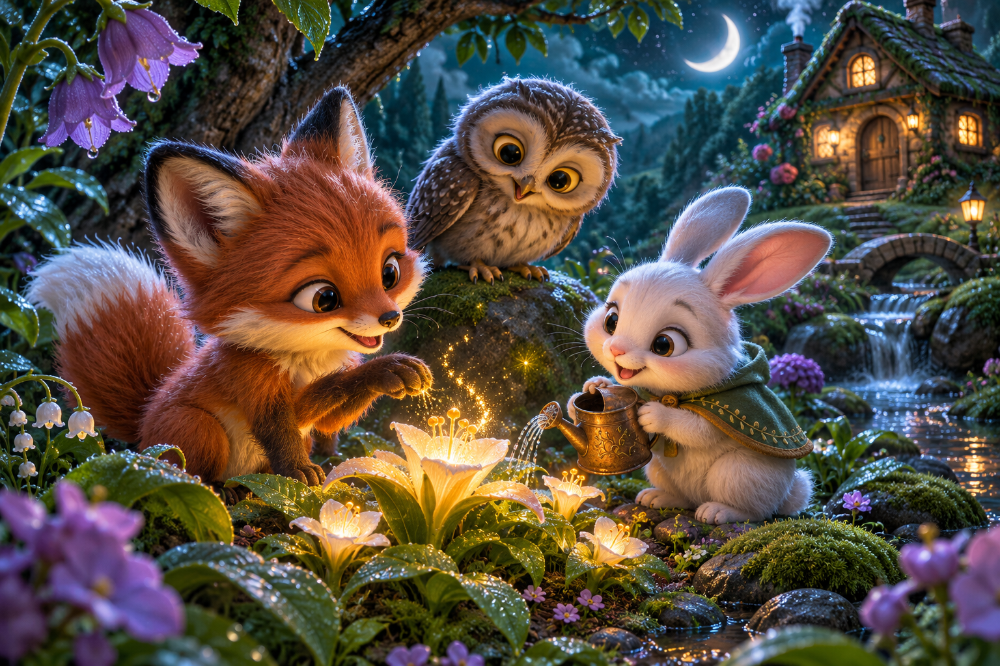

МАЛЕНЬКИЕ МИРЫ. БОЛЬШОЕ ВООБРАЖЕНИЕ.
Миры, в которые
Миры, в которые
веришь.
Мягкая шерсть. Тёплый свет. Роса на листьях.
Знакомые истории обретают глубину.
В ФОКУСЕЛунная долина
10 миров · новая визуальная серияСвет / фактура / характер
КОЛЛЕКЦИЯ МИРОВУ каждой истории
У каждой истории
свой свет.
Открой любой мир, чтобы рассмотреть детали.
Передвинь границу и сравни с первым эскизом.
ПОЛНОСТЬЮ ВЕКТОРНАЯ КОЛЛЕКЦИЯБольше жизни.
Больше жизни.
В каждой детали.
Новые миры, обложки и подробные раскраски.
Открой рисунок и сравни с предыдущим SVG.
20 персонажей · 14 уникальных героев
Сказка, которую
почти можно потрогать.
МатериалыШерсть, керамика, дерево и стекло с собственной фактурой.
ОсвещениеСолнечные лучи, свет фонарей и отражения создают глубину.
ХарактерДобрые лица и ясные силуэты сохраняют ощущение игры.
PNG-обложки и векторные ресурсы для будущего внедрения. Анимационные состояния и 3D-модели потребуют отдельной подготовки.